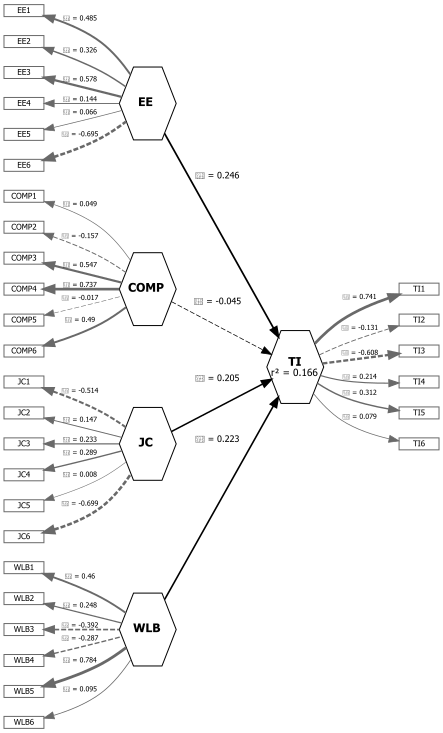

| Konstruk | Nama.variabel. | Pertanyaan |
|---|---|---|
| Work-life Balance (WLB) | WLB1 | Saya dapat menyeimbangkan tuntutan pekerjaan dan kehidupan pribadi saya. |
| Work-life Balance (WLB) | WLB2 | Saya jarang membawa pekerjaan ke rumah. |
| Work-life Balance (WLB) | WLB3 | Waktu saya untuk keluarga tidak terganggu oleh pekerjaan. |
| Work-life Balance (WLB) | WLB4 | Saya merasa puas dengan keseimbangan antara pekerjaan dan kehidupan pribadi saya. |
| Work-life Balance (WLB) | WLB5 | Saya memiliki cukup waktu untuk aktivitas di luar pekerjaan. |
| Work-life Balance (WLB) | WLB6 | Stres pekerjaan tidak memengaruhi hubungan saya dengan keluarga. |
| Employee Engagement (EE) | EE1 | Saya merasa bersemangat saat bekerja. |
| Employee Engagement (EE) | EE2 | Saya tenggelam dalam pekerjaan saya. |
| Employee Engagement (EE) | EE3 | Saya merasa pekerjaan saya bermakna. |
| Employee Engagement (EE) | EE4 | Saya bangga dengan pekerjaan saya. |
| Employee Engagement (EE) | EE5 | Saya merasa termotivasi setiap hari kerja. |
| Employee Engagement (EE) | EE6 | Saya ingin berkontribusi lebih banyak dalam organisasi. |
| Competency (COMP) | COMP1 | Saya memiliki kemampuan teknis yang diperlukan untuk pekerjaan saya. |
| Competency (COMP) | COMP2 | Saya terus mengembangkan keterampilan saya. |
| Competency (COMP) | COMP3 | Saya dapat bekerja secara efektif dalam tim. |
| Competency (COMP) | COMP4 | Saya memiliki pengetahuan yang cukup untuk melaksanakan tugas. |
| Competency (COMP) | COMP5 | Saya mampu mengambil keputusan dalam situasi sulit. |
| Competency (COMP) | COMP6 | Saya dapat menyesuaikan diri dengan perubahan di tempat kerja. |
| Job Characteristic (JC) | JC1 | Pekerjaan saya memerlukan berbagai keterampilan. |
| Job Characteristic (JC) | JC2 | Saya memiliki otonomi dalam mengambil keputusan. |
| Job Characteristic (JC) | JC3 | Saya tahu seberapa baik saya melakukan pekerjaan saya. |
| Job Characteristic (JC) | JC4 | Pekerjaan saya memberikan kontribusi berarti bagi organisasi. |
| Job Characteristic (JC) | JC5 | Saya mendapatkan umpan balik atas hasil pekerjaan saya. |
| Job Characteristic (JC) | JC6 | Saya merasa pekerjaan saya menantang dan tidak monoton. |
| Turn-over Intention (TI) | TI1 | Saya sering memikirkan untuk meninggalkan instansi saya. |
| Turn-over Intention (TI) | TI2 | Saya sedang mencari pekerjaan di tempat lain. |
| Turn-over Intention (TI) | TI3 | Jika memungkinkan, saya ingin berhenti dari pekerjaan ini. |
| Turn-over Intention (TI) | TI4 | Saya merasa tidak akan bertahan lama di instansi ini. |
| Turn-over Intention (TI) | TI5 | Saya tidak memiliki komitmen jangka panjang terhadap organisasi. |
| Turn-over Intention (TI) | TI6 | Saya merasa bekerja di tempat lain akan lebih baik. |
Pembinaan Agen Statistik
1 Pendahuluan
Topik yang kita angkat pada tutor kali ini adalah Pengaruh Work Life Balance, Employee Engagement, Competency, dan Job Characteristic terhadap Turnover Intention pada Karyawan Generasi Milenial Perusahaan XYZ. Rincian variabel konstruk dapat dilihat pada tabel berikut.
2 Pengenalan Package SEMinR
2.1 Install package
Package yang akan digunakan dalam tutor kali ini adalah SEMinR, jalankan kode install.packages("seminr") pada console untuk memasangnya pada Rstudio.
# Load package
library(seminr)2.2 Load data
Pertama kali, load dataset yang akan kita gunakan untuk memodelkan SEM-PLS menggunakan fungsi read.csv( ... ). 📥 Unduh Dataset dataset.csv
data <- read.csv("dataset.csv", header = TRUE, sep = ',')
data <- data[,-1] # menghapus kolom IDDataset ini terdiri dari 250 observasi dan 30 variabel.
head(data)
DISCLAIMER - Data ini merupakan Data Dummy yang di-generate menggunakan bantuan ChatGPT dan hanya bertujuan untuk kepentingan tutorial.
3 Membangun model struktural
3.1 Mendefinisikan konstruk
# Definisikan konstruk (measurement model)
mm <- constructs(
composite("WLB", multi_items("WLB", 1:6)),
composite("EE", multi_items("EE", 1:6)),
composite("COMP", multi_items("COMP", 1:6)),
composite("JC", multi_items("JC", 1:6)),
composite("TI", multi_items("TI", 1:6))
)# Definisikan hubungan antar konstruk (structural model)
sm <- relationships(
paths(from = c("WLB", "EE", "COMP", "JC"), to = "TI")
)3.2 Estimasi model
# Estimasi model dengan metode Partial Least Square (PLS)
pls_model <- estimate_pls(data = data,
measurement_model = mm,
structural_model = sm,
inner_weights = path_weighting)Generating the seminr modelAll 250 observations are valid.p <- plot(pls_model)
p

3.3 Hasil estimasi
summary_pls_model <- summary(pls_model)# Koefisien jalur dan signifikansi
summary_pls_model$paths TI
R^2 0.166
AdjR^2 0.153
WLB 0.223
EE 0.246
COMP -0.045
JC 0.205# Reliabilitas
summary_pls_model$reliability alpha rhoC AVE rhoA
WLB -0.099 0.145 0.189 0.186
EE -0.238 0.145 0.197 0.203
COMP 0.147 0.357 0.185 0.135
JC -0.010 0.053 0.152 -0.160
TI -0.056 0.070 0.181 0.126
Alpha, rhoC, and rhoA should exceed 0.7 while AVE should exceed 0.5# Validitas
#summary_pls_model$validity3.4 Evaluasi model
boot_pls_model <- bootstrap_model(seminr_model = pls_model,
nboot = 1000,
cores = NULL,
seed = 123)Bootstrapping model using seminr...SEMinR Model successfully bootstrappedsum_boot_pls_model <- summary(boot_pls_model)4 Membangun model dengan variabel moderasi
4.1 Mendefinisikan konstruk
# Definisikan konstruk (measurement model)
mm2 <- constructs(
composite("WLB", multi_items("WLB", 1:6)),
composite("EE", multi_items("EE", 1:6)),
composite("COMP", multi_items("COMP", 1:6)),
composite("JC", multi_items("JC", 1:6)),
composite("TI", multi_items("TI", 1:6)),
interaction_term(iv = "WLB", moderator = "JC", method = two_stage),
interaction_term(iv = "EE", moderator = "JC", method = two_stage),
interaction_term(iv = "COMP", moderator = "JC", method = two_stage)
)# Definisikan hubungan antar konstruk (structural model) dengan variabel moderasi
sm2 <- relationships(
paths(from = c("WLB", "EE", "COMP", "JC"), to = "TI"),
paths(from = c("WLB*JC", "EE*JC", "COMP*JC"), to = "TI")
)4.2 Estimasi model interaksi
# Estimasi model dengan metode Partial Least Square (PLS)
pls_model2 <- estimate_pls(data = data,
measurement_model = mm2,
structural_model = sm2,
inner_weights = path_weighting)Generating the seminr modelAll 250 observations are valid.# Plot diagramnya
plot(pls_model2, "Hasil Pemodelan")summary_pls_model2 <- summary(pls_model2)4.3 Hasil estimasi
# Koefisien jalur dan signifikansi
summary_pls_model2$paths TI
R^2 0.193
AdjR^2 0.170
WLB 0.224
EE 0.229
COMP -0.074
JC 0.194
WLB*JC -0.082
EE*JC 0.160
COMP*JC -0.017# Reliabilitas
summary_pls_model2$reliability alpha rhoC AVE rhoA
WLB -0.099 0.140 0.188 0.197
EE -0.238 0.171 0.196 0.192
COMP 0.147 0.395 0.181 0.081
JC -0.010 0.027 0.152 -0.145
WLB*JC 1.000 1.000 1.000 1.000
EE*JC 1.000 1.000 1.000 1.000
COMP*JC 1.000 1.000 1.000 1.000
TI -0.056 0.176 0.182 0.121
Alpha, rhoC, and rhoA should exceed 0.7 while AVE should exceed 0.5